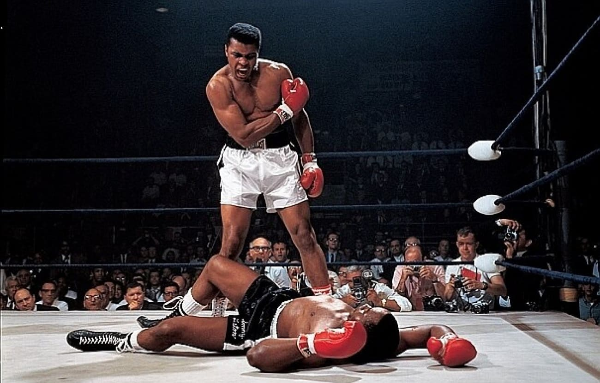
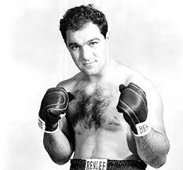
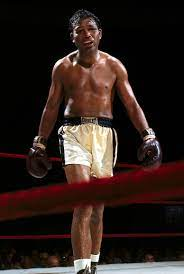
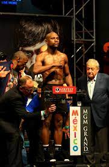
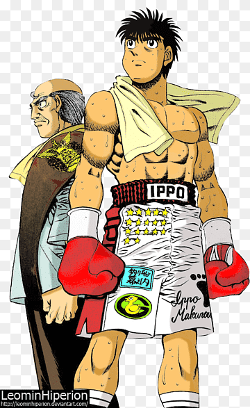
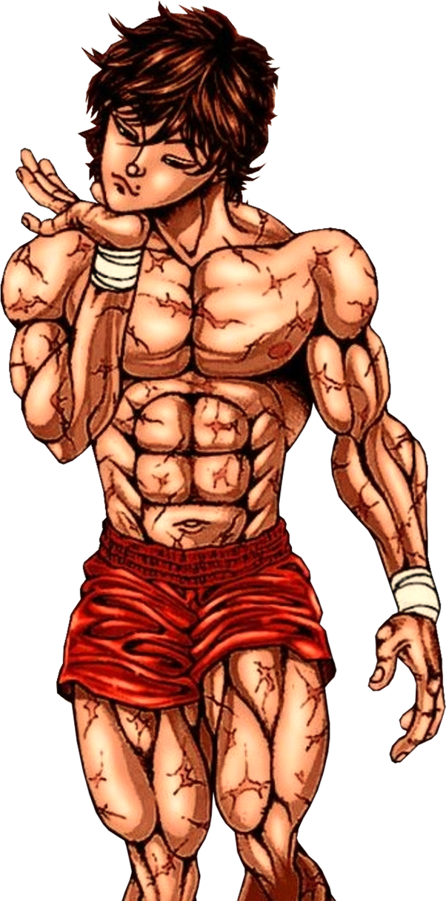
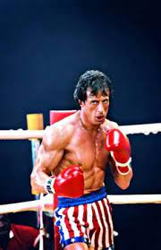

De la vida real al anime:
-

Muhammad Ali
Más que un boxeador, un ícono cultural. Con su estilo único y su activismo social, Ali revolucionó el boxeo y se convirtió en "The Greatest". Su rivalidad con Joe Frazier es legendaria.
-

Mike Tyson
"Iron Mike", un feroz noqueador que dominó el peso pesado en los 80s. Su vida ha estado llena de controversias, pero su talento en el ring es innegable.
-

Rocky Marciano
El único campeón de peso pesado invicto, con una racha de 49 victorias, 43 por KO. Su estilo rudo y su determinación lo convirtieron en una leyenda.
-

Sugar Ray Robinson
Considerado por muchos como el mejor boxeador libra por libra de la historia. Dominó el peso welter y mediano con su increíble velocidad y técnica.
-

Floyd Mayweather Jr.
Un boxeador defensivo con un récord impecable de 50-0. Su estilo "Money" no es para todos, pero su éxito financiero y su dominio del boxeo son innegables.
En el mundo del anime:
-

Ippo Makunouchi
Protagonista de Hajime no Ippo, un joven tímido que encuentra su camino en el boxeo. Su determinación y su espíritu de lucha lo convierten en un héroe para muchos.
-

Baki Hanma
El protagonista de Baki the Grappler, un luchador excepcional que busca superar a su padre, el legendario Yujiro Hanma. Sus brutales combates son un espectáculo de fuerza y resistencia.
-

Rocky Balboa
Un boxeador ficticio que se convierte en campeón del mundo en la saga de películas Rocky. Su historia de perseverancia y superación ha inspirado a millones de personas.